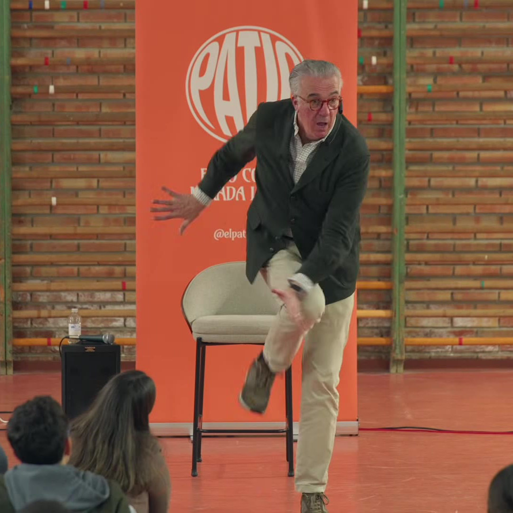
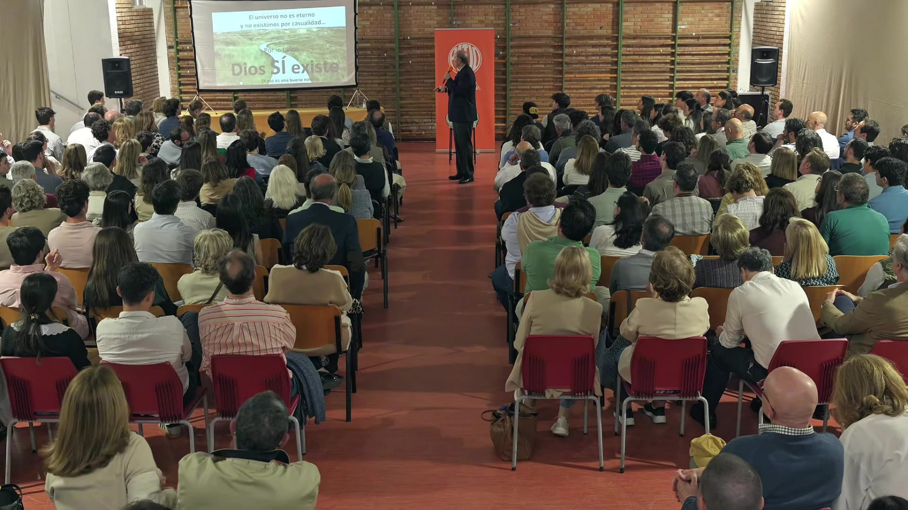

Patios presenciales
Unas veces será delante de ti. Una persona, su historia y un público que pregunta sin miedo.




Cómo es un patio
Dura una tarde, es gratis y no hace falta traer nada, solo preguntas.
Llegas
Vienes solo o con amigos y te sientas donde quieras, también en el suelo.
Escuchas
El invitado cuenta su camino: lo que le costó, en qué se equivocó y qué aprendió.
Preguntas
El micro pasa al público. Aquí no hay preguntas tontas.
Te quedas
Afterpatio: música, comida, ambiente y conversación con la gente que ha venido.
Tres patios, 785 personas
Cada patio se graba y se publica después. Pulsa en uno para ver la charla y sus fragmentos.